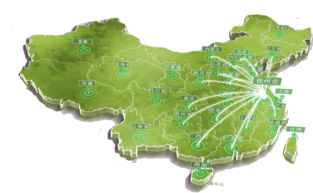

首页
团队介绍
新能源新材料介绍
相关企业介绍
ABOUT US
新质生产力首次提出之际，梦中国实践团深入学习习近平总书记对马克思主义生产力理论的创新发展和重要拓展， 贯彻以科技创新推动产业创新，以材料领域前沿技术催生新产业、新模式、新动能，发展新质生产力，开展“双碳” 助力，引导社会公众和广大青年学生深刻认识碳达峰碳中和目标的重大意义，以青年视角用视频、微课堂、采访录 等形式记录归纳。
了解详情>

团队足迹
青春力量，时代赋能|“梦中国”实践团调研湖南长沙新材料企业，解码新质生产力
青春力量，时代赋能|“梦中国”实践团走进新材料联盟，采访秘书长董思科
青春力量，时代赋能|“梦中国”实践团前往社区进行宣讲活动
青春力量，时代赋能|“梦中国”实践团前往聚治(苏州)纳米公司参观学习
青春力量，时代赋能|“梦中国”实践团前往江苏省淮安市天合光能股份有限公司参观
查看更多>>
梦中国社会实践团
以科技创新推动产业创新，以材料领域前沿技术催生新产业、新模式、新动能，解码新质生产力，共创能源新征程。
首页
团队介绍
新能源新材料介绍
相关企业介绍
版权所有：中国矿业大学梦中国社会实践团